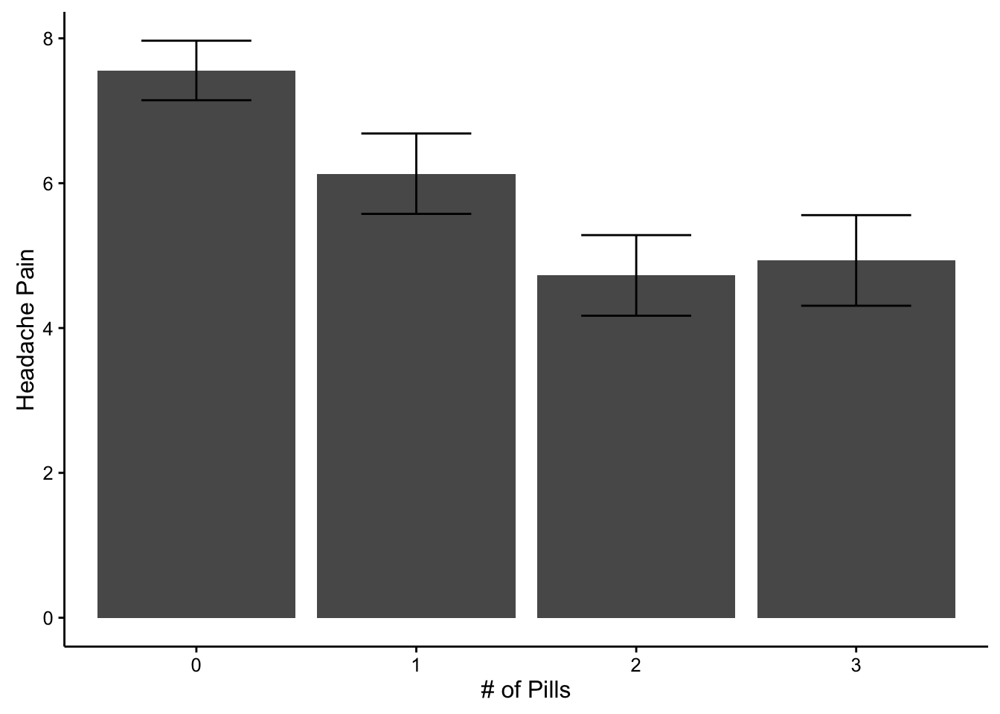
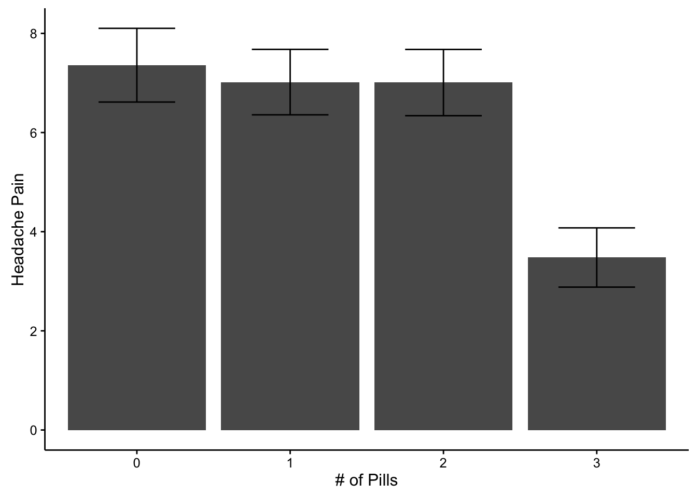
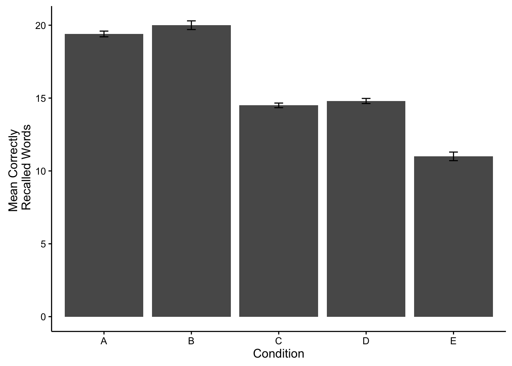

The experiments we have discussed so far are fairly simple. They have one independent variable with two levels, and a single dependent variable. Experiments can become much more complicated by adding more levels to the independent variable, adding more independent variables, and/or adding more dependent variables. As experiments become more complicated, the basic empirical question remains the same: Did the manipulation(s) cause change in the measure(s). To ease into more complex designs we will discuss single factor designs with more than two levels.
A single factor design with more than two levels involves a single independent variable (factor), and typically a single dependent variable. Importantly, the independent variable has more than two levels. Two common kinds of multi-level designs involve either quantitative or qualititative manipulations of the independent variable.

A quantitative manipulation is a change in magnitude, or amount. For example, a drug company might be interested in testing not only whether or not Drug A reduces headache (perhaps by comparing one group that gets the drug, and another that does not), but also how the amount of the drug influences reductions in headache pain. So, a multi-level experiment might have a few groups who receive, 0, 1, 2, 3, 4 or more pills, respectively.

A qualitative manipulation involves categorically different conditions. For example, a drug company might be interested in comparing the relative effectiveness of different kinds of drugs in reducing headache pain. They could conduct a multi-level experiment with each group receiving a different drug, drug A, drug B, drug C, and so on.
Designs with only two levels are fairly straightforward to interpret because there are only a few possible kinds of patterns of differences that can be observed. These include: A>B, A=B, and A<B. Or even more simply: A is the same as B (A=B), or A is not the same as B (A>B, or A<B).
The number of possible patterns that could be observed increases with each additional level. For example, consider an experiment with three levels A, B, and C. The possible patterns that could be observed are shown on the right.
As with two level designs, when reporting the results of experiments with multiple levels, it is very important to explain the pattern of means across conditions. This involves telling the reader which means were different from one another, and which means were the same.
Again, as with 2-level designs, the process of random sampling can produce differences in the sample means for each of the levels. So, researchers also conduct statistical tests to determine the likelihood that the results that they observed could have been obtained by chance alone. The most common statistical test used in this case is the one-way ANOVA (Analysis of Variance). The chapter on inferential statistics goes into more detail about ANOVAs, and we assume that you have some memories of how ANOVAs work from your statistics class. Nevertheless, we go through an example to illustrate the basic process. Note, this example is the same one discussed in chapter four of your lab manual.
Consider an experiment where subjects attempt to memorize words for a later recall test under five different conditions. This will be a between-subjects experiment with 10 simulated subjects in each condition. We will have condition A, B, C, D, and E. For example, condition A could be repeating each word silently to yourself, condition B could be creating a mental picture of each word, and so on. To simulate data for each subject we need to make some assumptions. Let’s say that out of 30 words most people remember about 15 of them, but there is variation, so some people do better and some people do worse. We can model this by sampling numbers randomly from a distribution of our choice. For convenience, we will use the normal distribution. Let’s imagine that condition A and B help memory more than C and D, and that memory is worse in condition E. Here is the R code and output for simulating this kind of data.
A<-round(rnorm(10,20,2))
B<-round(rnorm(10,20,2))
C<-round(rnorm(10,15,2))
D<-round(rnorm(10,15,2))
E<-round(rnorm(10,10,2))
all_data<-data.frame(A,B,C,D,E)
kable(all_data,format="markdown")| A | B | C | D | E |
|---|---|---|---|---|
| 20 | 24 | 14 | 14 | 8 |
| 20 | 23 | 14 | 18 | 12 |
| 21 | 18 | 16 | 17 | 10 |
| 23 | 22 | 18 | 13 | 8 |
| 20 | 20 | 16 | 14 | 11 |
| 20 | 20 | 18 | 16 | 14 |
| 19 | 21 | 16 | 17 | 12 |
| 21 | 19 | 15 | 14 | 11 |
| 17 | 21 | 17 | 16 | 10 |
| 19 | 23 | 18 | 13 | 11 |
We have produced a table with fake data for 10 subjects in each condition. The numbers all represent the number of correctly recalled words for each simulated subject. For groups A and B we sample 10 numbers, from a distribution with mean 20, and standard deviation 2. This is a higher mean than groups C and D (mean = 15). The lowest mean was for Group E (mean = 10). So, on average, groups A and B should have higher scores than C and D, which should be higher than E.
Ok, so what happened in our simulated experiment. We can see the numbers in the table, but it would be nice to summarize them so we can more easily look at differences. After all, it’s hard to make sense of a bunch of raw data in a table.
One way to summarize the data is to compute the group means for each condition. This averages over the subjects, and gives us only 5 means to look at, so it is easier to see the differences. We can “easily” do this in R in a couple different ways. However, R often likes the data in a particular format, in this case long-data format. So, we will first convert to that format, and see what it looks like.
long_data<-data.frame(Conditions=rep(c("A","B","C","D","E"),each=10),
Recall=c(A,B,C,D,E))
kable(long_data[1:25,],format="markdown")| Conditions | Recall |
|---|---|
| A | 20 |
| A | 20 |
| A | 21 |
| A | 23 |
| A | 20 |
| A | 20 |
| A | 19 |
| A | 21 |
| A | 17 |
| A | 19 |
| B | 24 |
| B | 23 |
| B | 18 |
| B | 22 |
| B | 20 |
| B | 20 |
| B | 21 |
| B | 19 |
| B | 21 |
| B | 23 |
| C | 14 |
| C | 14 |
| C | 16 |
| C | 18 |
| C | 16 |
I’ve only printed the first 25 lines, but the dataframe contains all of the data for conditions, C, D, and E as well. You can see why they call it long format. It’s because each data point gets it’s own row in the table.
Now that the data is in long format we can easily make a table of the condition means
condition_means<-aggregate(Recall~Conditions,long_data,mean)
kable(condition_means,format="markdown")| Conditions | Recall |
|---|---|
| A | 20.0 |
| B | 21.1 |
| C | 16.2 |
| D | 15.2 |
| E | 10.7 |
We can now see the group means, but we can’t see any measure of how variable the data are in each condition. We might, for example, also want to compute the standard deviation as well as the mean, and put them both in the table. We could run the same code from above and substite sd for mean, which would give us a table of standard deviations. However, we will use a more advanced function from the plyr package, called ddply. ddply let’s you compute multiple statistics and put them all in a single table. The syntax is a bit different, but it doesn’t take long to get used to it.
library(plyr)
condition_means<-ddply(long_data,.(Conditions),summarise,
MeanRecall=mean(Recall),
StdDeviation=sd(Recall))
kable(condition_means,format="markdown")| Conditions | MeanRecall | StdDeviation |
|---|---|---|
| A | 20.0 | 1.563472 |
| B | 21.1 | 1.911951 |
| C | 16.2 | 1.549193 |
| D | 15.2 | 1.813529 |
| E | 10.7 | 1.828782 |
It’s often very desirable to plot the data in a graph, rather than just present the means in a table. People find it easier to look at graphs, because the differences in the data just pop-out much easier than looking at numbers in a table. R has a fantastic graphing package called ggplot2. ggplot2 is a whole philosophy for visual design and data-presentation, and it can be daunting at first. But, it’s complexity makes it very powerful, and when you get the hang of it you can very quickly make all sorts of beautiful graphs to present data. Here is some code to make ggplot create a bar graph to plot the means, along with error bars. In this case the error bars with represent standard errors of the mean, rather than standard deviations. R does not have a built in function for the standard error of the mean, so we have to write it ourselves.
library(ggplot2)
sde<-function(x){sd(x)/length(x)}
plot_means<-ddply(long_data,.(Conditions),summarise,
MeanRecall=mean(Recall),
SE=sde(Recall))
limits <- aes(ymax = MeanRecall + SE, ymin = MeanRecall - SE)
ggplot(plot_means,aes(x=Conditions, y=MeanRecall))+
geom_bar(position="dodge",stat="identity")+
geom_errorbar(limits, width=.1)+
theme_classic(base_size=12)+
ylab("Mean Correctly \n Recalled Words")+
xlab("Condition")
Now it is easy to the differences between conditions. Just as we had hoped, Groups A and B appear to have recalled more words than Groups C and D, which remembered more words than group E.
Although the graph and the tabe show some clear differences in the means, we still want to find out the probability that this kind of finding occurs by chance alone. We can be confident in the differences when we know that they do not occur very often by chance alone. The first step is conduct a one-way ANOVA. This is very easy in R.
aov.out<-aov(Recall~Conditions,long_data)We’re done! It’s only one line of code. However, we need a couple more to see the results.
aov_summary<-summary(aov.out)
kable(xtable(aov_summary),format="markdown")| Df | Sum Sq | Mean Sq | F value | Pr(>F) | |
|---|---|---|---|---|---|
| Conditions | 4 | 687.32 | 171.830000 | 56.77203 | 0 |
| Residuals | 45 | 136.20 | 3.026667 | NA | NA |
The ANOVA table gives us a bunch of information. We will go into much greater detail about the meaning of each number in the table, but also assume for now that you are somewhat familiar with these ideas because you have already taken statistics, right?
We are mainly interested in the p-value, which tells how often results like the ones we found can occur by chance. But, when we report the results of our ANOVA, we also provide additional information about the F-value, the degrees of freedom values, and the mean squared error term. The reason is that if you know these numbers, you can actually reconstruct all of the other numbers. The results of our ANOVA are significant. You could report this in a sentence like the following.
The main effect of condition was significant, F(4, 45) = 56.77, MSE = 3.03, p < .001.
The p-value from above is much smaller than .05, which shows the difference between conditions in the data does not occur very often by chance alone. However, because we conducted an omni-bus test, we only know that there is some difference between conditions, but we do not know which specific conditions are different from one another.
So, we have to conduct additional tests between specific conditions. There are multiple strategies for conducting these tests. For now, we will simply run t-tests between comparisons of interest.
Remember, our data simulated the pattern that memory recall would be better for groups A and B, which would be better than groups C and D, which would better than group E. In other words A=B > C=D > E.
We can confirm this pattern by conducting tests to see if it holds up. For example, how would we test the pattern A=B > C=D > E, all of the following comparisons need to be true,
and, all of the conditions should be greater than E
Let’s conduct a few of these tests, and then report the findings.
library(broom)
#conduct t-tests
ab<-tidy(t.test(A,B,var.equal = TRUE))
ac<-tidy(t.test(A,C,var.equal = TRUE))
cd<-tidy(t.test(C,D,var.equal = TRUE))
de<-tidy(t.test(D,E,var.equal = TRUE))
#put the results in a table
alltests<-rbind(ab,ac,cd,de)
alltests<-cbind(alltests,Comparison=c("AB","AC","CD","DE"))
finaltable <- subset(alltests, select = c(Comparison,estimate1,estimate2,statistic,p.value,parameter))
kable(finaltable,format="markdown")| Comparison | estimate1 | estimate2 | statistic | p.value | parameter |
|---|---|---|---|---|---|
| AB | 20.0 | 21.1 | -1.408406 | 0.1760498 | 18 |
| AC | 20.0 | 16.2 | 5.459610 | 0.0000347 | 18 |
| CD | 16.2 | 15.2 | 1.325825 | 0.2014782 | 18 |
| DE | 15.2 | 10.7 | 5.525182 | 0.0000302 | 18 |
The following is an example results section for our hypothetical experiment. This could serve as a model for your own results section.
The number of correctly recalled words for each subject in each condition were submitted to a one-way ANOVA, with memorization condition (A, B, C, D, and E) as the sole between-subjects factor. Mean recall scores in each condition are displayed in Figure 1.
The main effect of memorization condition was significant, F(4, 45) = 56.77, MSE = 3.03, p < .001. Figure 1 shows that Groups A and B had higher recall scores than Groups C and D, which had higher recall scores than Group E. This pattern was confirmed across four independent sample t-tests. Group A (M = 20) and Group B (M = 21.1) were not significantly different t(18) = -1.41, p =0.176. Group A recalled significantly more words than Group C (M = 16.2), t(18) = 5.46, p =0. Group C and Group D (M = 15.2) were not significantly different t(18) = 1.33, p =0.201. Finally, Group D recalled significantly more words than Group E (M = 10.7), t(18) = 5.53, p =0.